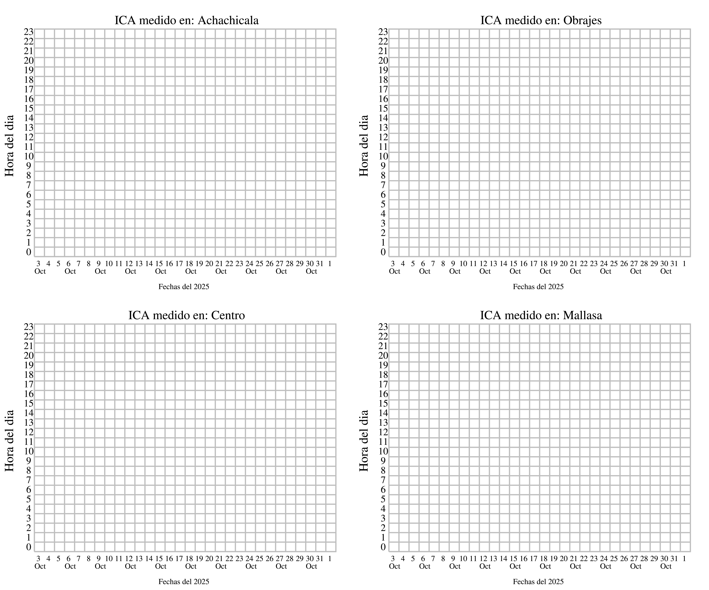
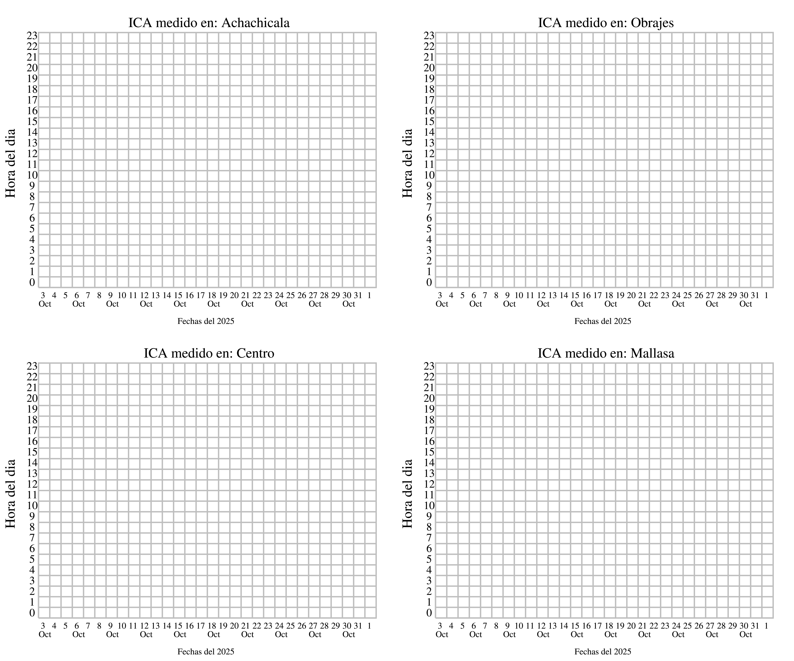

Se presentan gráficos en tiempo real del Índice de Calidad del Aire (ICA) para PM10 en varios sitios de la ciudad de La Paz, obtenidos mediante equipos de bajo costo Airnotes. Los colores utilizados en los gráficos se explican en una tabla que indica los rangos del ICA y su impacto en la salud, por ejemplo, de "Buena" a "Dañina a la Salud" según los valores del índice.
Además, para proporcionar contexto sobre las condiciones meteorológicas, se incluyen mapas de vientos basados en datos del Global Forecasting System (GFS), que ayudan a interpretar la dispersión y comportamiento de los contaminantes en la atmósfera.

 
